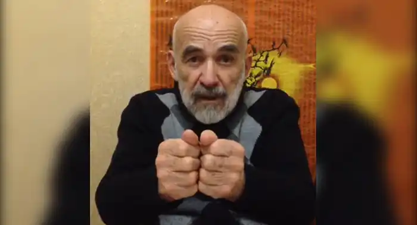

Ахсар Магометович Кодзаті народився 30 червня 1937 в сіл. Брут Північної Осетії.
Закінчив семирічку в рідному селищі, середня освіта завершив у м Терек Кабардино-Балкарської АРСР, куди переїхала сім'я в 1952 р
У 1955-56 рр. Ахсар працював упорядником поїздів на станції Назрань Північно-Кавказької залізниці. У 1956 р він став студентом історико-філологічного факультету Північно-Осетинського державного педагогічного інституту. У 1961-62 рр. він працює вчителем в сіл. Мацута, потім співробітником Алагирського районної газети "Шлях до комунізму". З 1963 по 1967 р А. Кодзаті — кореспондент і редактор республіканського радіо. У 1969 році закінчив Вищі літературні курси при СП СРСР. З тих пір він — співробітник журналу "Мах дуг". З 1977 по 1982 р — ответсекретарь правління СП, з лютого 1986 року — головний редактор журналу "Мах дуг". А. Кодзаті — член Спілки письменників СРСР з 1966 р З 1954 року вірші Кодзаті публікувалися в журналах Північної і Південної Осетії, а в перекладі на російську мову — на сторінках "Літературної газети", газети "Літературна Росія", в журналах "Москва", "Нева", "Наш современнік", "Дон", "жовтень". У журналі "Дружба народів" в 1970 р друкувалася його повість "Котиться гарба назустріч дню". Перекладався на український, грузинський, литовська, латиська, татарський, чеченський, інгушський, кабардинский, балкарський, англійська, іспанська, німецька, болгарська, польська, словацька та ін.